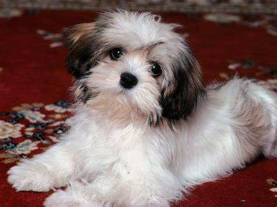

Amazing Dog Facts!
These fun facts about dogs will make you feel all fuzzy inside.
- All dogs can be traced back 40 million years ago to a weasel-like animal called the Miacis which dwelled
intrees and dens. The Miacis later evolved into the Tomarctus, a direct forbear of the genus Canis,
which includes the wolf and jackal as well as the dog.
- Ancient Egyptians revered their dogs. When a pet dog would die, the owners shaved off their eyebrows,
smeared mud in their hair, and mourned aloud for days.
- Small quantities of grapes and raisins can cause renal failure in dogs. Chocolate, macadamia nuts, cooked
onions, or anything with caffeine can also be harmful.
- Apple and pear seeds contain arsenic, which may be deadly to dogs.
- Rock star Ozzy Osborne saved his wife Sharon's Pomeranian from a coyote by tackling and wrestling the
coyote until it released the dog.
- Dogs have sweat glands in between their paws.